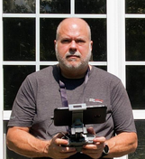

About Me
Hello, I'm Doug Ware, and welcome to the "About Me" page of Elumenotion. As a passionate software developer and cloud solutions architect, I've built my career around technology and innovation. Working with various companies, from startups to multinational corporations, I currently lead the architecture function for global systems, managing large teams and specialized architects.

My Background
With over a decade of experience in the software industry, I've actively participated in numerous aspects of the business, including management and sales. My expertise centers on delivering cloud-native production systems on Microsoft Azure and Office 365, and I've had the opportunity to collaborate with major clients such as McKesson, Microsoft, PwC, and EY.
In addition to my professional experience, I engage with the tech community. For over ten years, I ran the Atlanta .NET User Group, and I played a core role in organizing Atlanta Code Camp and Atlanta SharePoint Saturday for many years. Microsoft has recognized my contributions as a Microsoft Most Valuable Professional for Office Servers and Services from 2011 to 2019.
My Interests
My interests stretch beyond software development. I'm an advocate for AI as a medium for better communication and knowledge management, and I am actively using AI tools, such as Chat-GPT, in my work outside of my day job and look forward to being able to use them to build the kind of massive systems we make at EY. Some of my other passions include hydroponic gardening, photography, drones, 3D printing, virtual reality, and VR fitness. In fact, I'm an avid Beat Saber player and have lost over 40 pounds to date!
As we journey together through Elumenotion, I look forward to sharing my thoughts, experiences, and knowledge with you. Together, we can explore the rapidly changing world of technology and learn how to harness these changes for a brighter future.
Thank you for taking the time to learn more about me, and I hope you enjoy your time here at Elumenotion.
--Doug